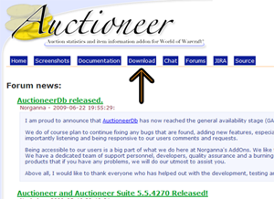
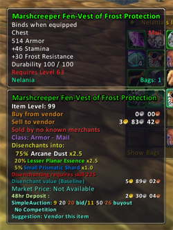
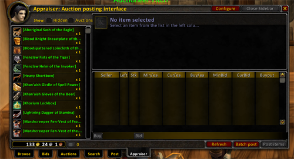
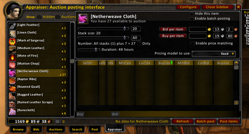
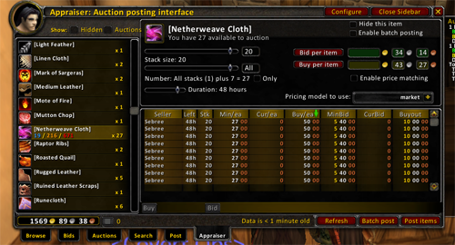

Overview
Lots of guides show you how to make gold in the game, but they tell you things that really cut into your leveling time. This guide is intended to show you ways to make lots of gold WHILE leveling your characters. The information in this guide will help you on your way to buying your talents, gear, and mounts on your way to level 80. So without further adue, lets get started.
Getting your upstart
We will start off with the basics of how to collect a decent pile of coins in the earliest stages of World of Warcraft. If you already have another character who can send you money then you do not need to read this section, unless you're just curious.
Auction House Alt
After you create your new character you should begin leveling straight away, right? Actually, the first thing you should do is create another character and run them all the way to the nearest major city. For Alliance, we recommend making a Dwarf/Gnome and running them to Ironforge. For Horde, make an Orc/Troll and run them to Orgrimmar. Make their name something short and easy to remember because whenever you need to sell things at the Auction House or send things to your main character you will use this character. You don't want the name to be long to type of hard to remember when you send stuff to the alt via the mailbox.
Now that you have your alt character, start questing with you main. At the beginning you will get a lot of trash items and should basically sell these items to vendors to start generating money. We recommend the addon Sell-O-Matic which will place a single button on the vendor sell screen that automatically sells all gray items for you.
Eventually you will start getting Small Eggs, Stringy Wolf Meat, and Chunks of Boat Meat off mobs. Send these to your alt to sell on the Auction House. They pretty much always sell regardless of the servers economy.
Bigger Bags
One of the few things that it is ok to spend your money on is more inventory space (Bags). Most of the stuff you can make money on while leveling is collected while questing, so the bigger the bags the better the haul you can ship to your Auction House Alt.
Do Not Buy Gear!
One of the biggest money sinks in the game is actually a players own compulsive nature to spend, spend, spend at every oppurtunity, especially when it comes to gear. When using Zygor's Guide you will level up so quickly that the gear you buy will become outdated very fast. The gear you get for rewards should suffice for the most part. Only buy gear if you start having a hard time killing mobs or surviving in fights. We recommend buying a new gear only every 10 levels or even longer if you can manage.
Do Not Buy Every Spell
A lot of players have the bad habit of going to their class trainers every two levels and buying every new talent that is available to them. Generally, this is not nessasary since only a handful of talents have real use while leveling.
Get Two Gathering Professions
The only professions worth considering until you reach 80 are the three gathering professions: Skinning, Herbalism, and Mining. We recommend taking at least Skinning because it skills up faster and you get more skins than you will herbs or minerals. Sell all your stacks on the Auction House.
Auctioneer Appraiser Overview:
Auctioneer is one of the best addons available for World of Warcraft and is crucial to making money in the game. Have you ever found an item or a stack of items and gone to the Auction House only to discover you had no idea how much the items you collected were worth? Well this guide will demonstrate how you can use Auctioneer to set prices for your items and have it automatically undercut any competition you may have from other payers selling the same items. The first thing you will need to do is download and install the Auctioneer addon (it's free!) onto your computer.
Download and Installation:
01) Type http://auctioneeraddon.com/ into the address bar of your internet browser and press enter
02) On the Auctioneer homepage, select Download
03) You will be asked which version of Auctioneer you will want to download. Choose the latest Release Version.
04) On this next screen you will be given the option to download various packages that bundle Auctioneer with a few other addons. For this guide you will need the AuctioneerSuite package which is the first item down from the top of the page. You should see a section labled by Filename/Date/Size/Quality. Click the download link that says AuctioneerSuite-VersionNumber.zip underneath Filename.
05) A dialog box should pop up asking you if you want to open the download or save it to your harddrive. Because sometimes there are problems with opening directly from a download we recommend that you save the file to your desktop first before proceeding.
06) The next step can be done either using the extraction tools built into Windows XP/Vista or with a program like WinRar or WinZip. The easiest way would be to install WinRar and then right click the file you downloaded to your desktop and select extract here. This should unzip the folders directly onto your desktop. After that, head over to your World of Warcraft directory, go into Interface/Addons, then drag and drop the folders from your desktop to the addons folders.
Another way would be to right click the zip package and click Extract files, then set the Destination path to your addons folder.
If you do not have WinRar then you can use the extraction function built into Windows XP/Vista. Double click the file on your desktop and you should either see an option to Extract All Files on the left hand side of the window underneath Folder Tasks, click that and the Extraction Wizard will pop up. Click Next. Then it will ask you where you want to extract the files.
Usually the addons folder is found in the following locations by default
Windows XP:
C: -> Program Files -> World of Warcraft -> Interface -> AddOns
Windows Vista:
C: -> Users -> Public -> Games -> World of Warcraft -> Interface -> AddOns
OSX:
Applications -> World of Warcraft -> Interface -> AddOns
07) Launch World of Warcraft. If you installed everything in the proper place you should see Auctioneer listed under the addons button when you go to the character selection screen. If you do not see it you need to go back through the steps and find out where you went wrong. If you are having trouble locating your addon directory then an easy to find it is to right click your World of Warcraft shortcut on your desktop and select Properties. The directory will be listed next to the word Target.
To find out if Auctioneer is installed correctly and is working properly head to the nearest Auction House and talk to one of the Auctioneers. You should see new tabs at the bottom like BeanCounter and Appraiser.
08) Congratulations you have succesfully installed Auctioneer!
Selling Items With Appraiser:
Auctioneer is useful for many purposes. One of the best uses of it is deciding which item to choose for a Quest Reward. Say you have four items to choose from but none of the items are that useful to your character, or maybe you just already have better items. By hovering over each of the items you will now see two windows pop up, the standard WoW Window, and a new Auctioneer window with lots of information. You should usually see a stat called "Sell to vendor" or just "Sell" which will tell you which of the items will be worth the most gold if you decide to sell it.

When your bags get filled and/or you are ready to sell your items, head to the nearest Auction House and talk to an Auctioneer. The Auctioneer addon makes it really easy to find the items in your bags that you can actualy sell. At the bottom of the Auction House Interface select the Appraiser tab. On the left side of the interface you will see a list of all the items you can sell and how many duplicates of that item you have. For this demonstration I'm going to sell a stack of Netherweave Cloth.

Before we can sell the items we need to set some parameters first. It's best to sell items in stacks of 20 if possible. I have 27 Netherweave Cloth which means I really only have one stack to sell. Since I want to be able to keep adding to the extra 7 I need to tell Auctioneer not to sell the remaining 7. To do this, move the stack size meter to 20. This tells Auctioneer how much of a certain item should be considered a single stack. If you set it to 10 then it will think having 10 Netherweave Cloth is a full stack and will sell 2 stacks of 10 if you had 27 pieces like I do in this demonstration.
Next you need to tell Auctioneer how many stacks you want it to sell. If you set it to "All" it will sell not only the complete stacks but any extra pieces of an item you have, which we don't want it to do. So set the meter to Full, that way it only sells the item if it has a complete stack, and doesn't sell incomplete stacks. Finally, make sure the Duration is set to 48 hours so you have the best chance of selling your items.

Now without Auctioneer I would just have to guess how much a stack of Netherweave Cloth was worth, but with Auctioneer I will know exactly what it is worth. If you look on the right side you should see two rows that say Bid and Buy per item respectively, followed by a price. After clicking what you want to sell (in this case, Netherweave Cloth), set the Pricing model to "market" and hit the Refresh button at the bottom of the page. Auctioneer will scan the Auction House for other players selling the same item, find out how much the item is going for, then it will calculate the best price to sell it for, usually undercutting the competition by around 5% so that yours has a higher chance to sell.
Once you have a price, press the Post Items button and it will begin selling. What's really cool is that if you have say 100 Netherweave Cloth, it will automatically sell all 5 stacks back to back. You don't have to keep selling each stack individually which savess a great deal of time.

To check on the Auctions you have up just click the Auctions tab at the bottom of the Auction House Interface.